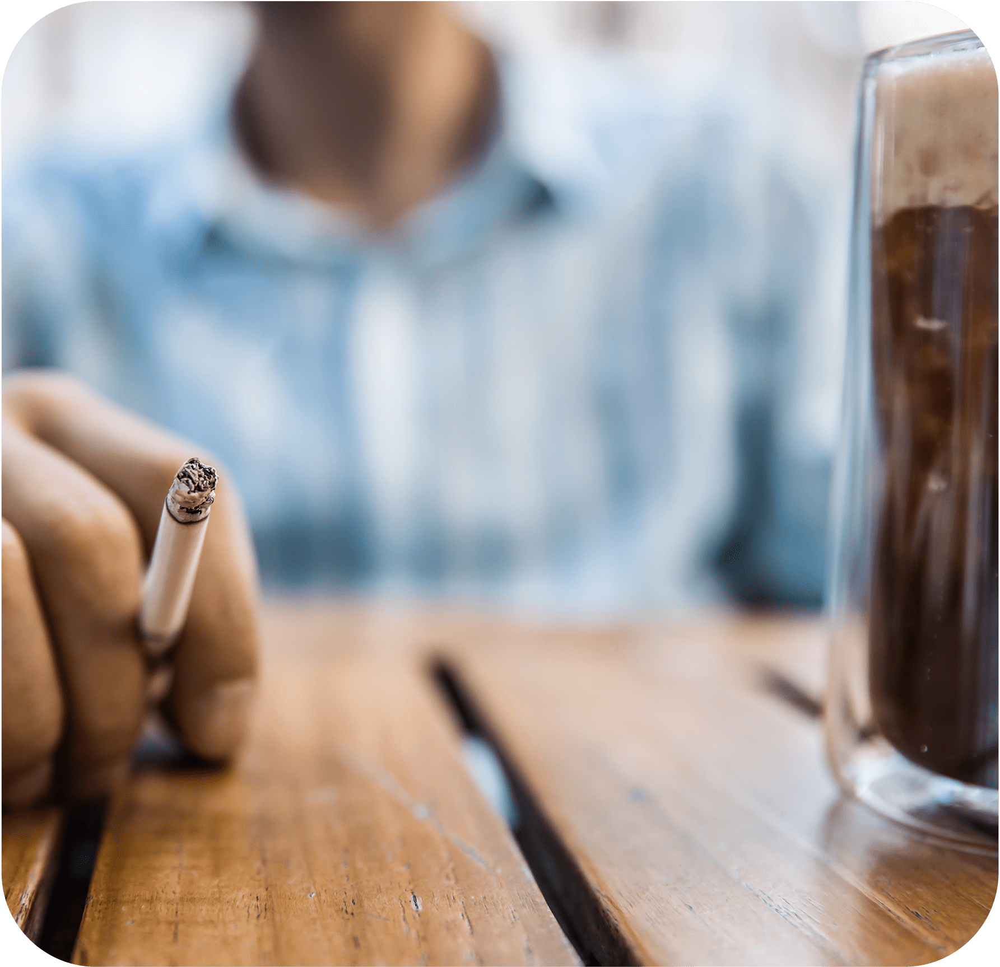
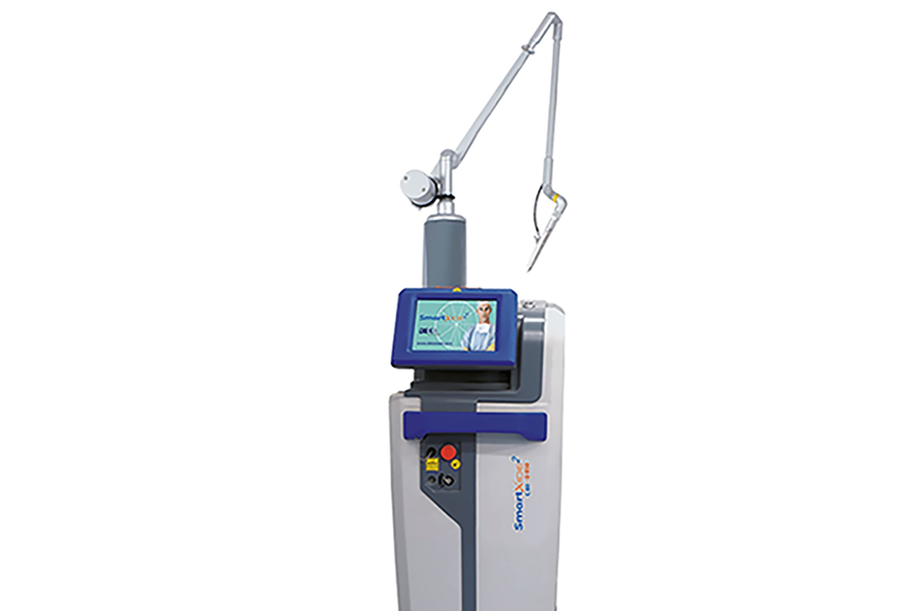
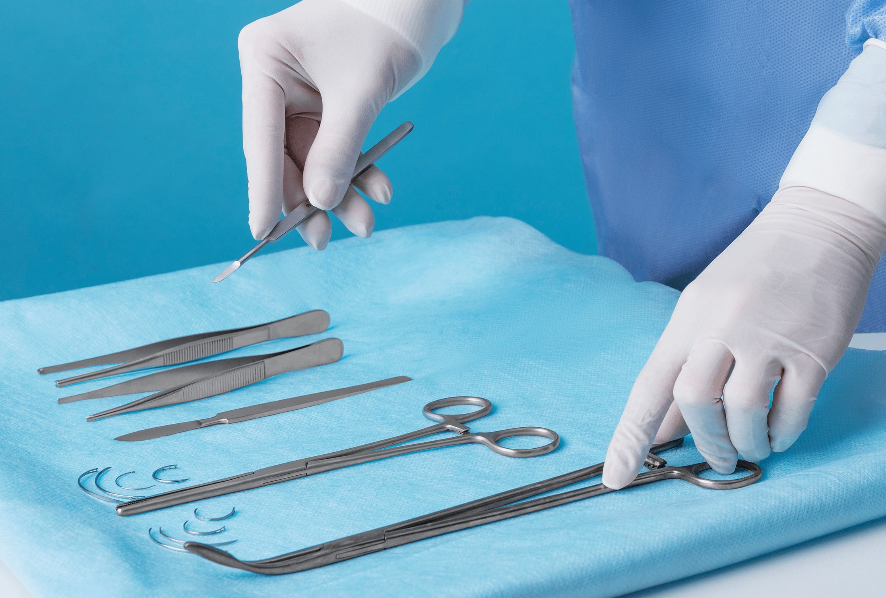
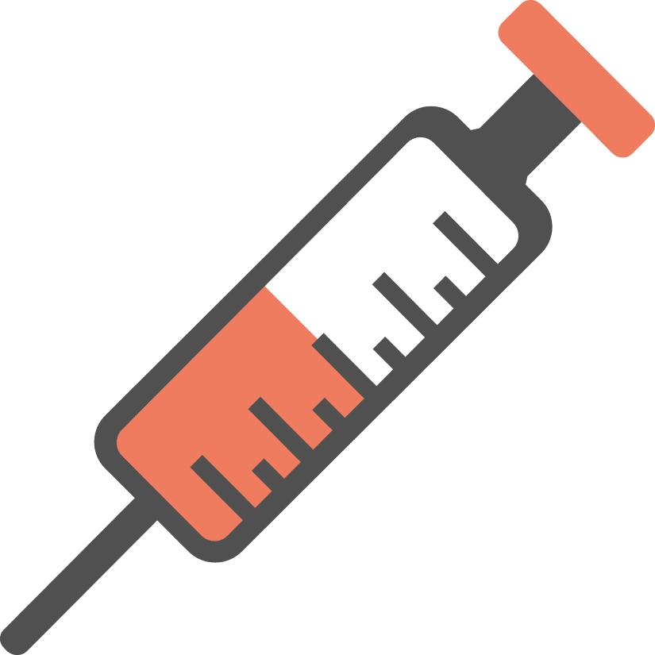

나를 위한
요실금
본인의 의지와 상관없이 소변이 새어 나오는
현상으로 남녀 모두 발생할 수 있지만
출산, 노화 등의 원인으로 현재 우리나라 여성의
40% 이상 겪고 있는 흔한 질환입니다
모든 연령에서 발생할 수 있으며,
특히 중노년기 여성들에게 자주 발생하며 갱년기 이후
여성호르몬 감소, 골반저근 약화, 방광 요도 괄약근의
지지력이 저하되어 요실금 발생률이 증가되고 있습니다
요실금 자가 진단
-
소변을 누어도 시원하지 않다.
-
기침, 재채기를 하면 소변이 새어나온다.
-
소변이 마렵기 시작하면
참을 수 없을 정도로 마렵다. -
밤에 소변을 보러가는
횟수가 3회 이상이다. -
앉았다 일어나거나,
무거운 물건을 들면 소변이 나온다. -
하루에 8번 이상 소변을 본다.
-
소변을 볼 때 통증이 있다.
요실금 원인
-
임신과 출산
-
노령화
-
호르몬 변화
-
비만
-

흡연,음주, 카페인
증상에 따른 요실금 유형
-
복압성 요실금
가장 대표적인 유형으로,
여성 요실금 80~90%가 흔하게
복압성 요실금을 겪고 있습니다. -
절박성 요실금
여성 요실금의 20~30%가
절박성 요실금을 겪고 있으며
갑자기
소변이 마렵고,
새는 증상이 발생합니다. -
혼합성 요실금
복압성 요실금과 절박성 요실금
증상이 동시에 나타나게 되는 것을
혼합성 요실금이라고 합니다. -
일류성 요실금
일류성 요실금은 방광의
소변 배출
기능이 떨어져
자신도 모르는 사이
소변이
새는 증상이 발생합니다.
나를위한 요실금 치료
-

비수술적 치료레이저, 필러 등의 시술을 통해
질 내부의 탄성을 회복하고,
방광 주변 근육을 강화합니다. -

수술적 치료미니 슬링 수술은
최소 침습으로 피부절개를 하지 않고
질 절개만으로 수술이 이루어집니다.
수술 후 흉터가 질 내에 남아
겉으로 거의 보이지 않으며, 통증이 적어
빠른 일상생활 회복이 가능합니다.
나를위한
미니슬링(Mini-Sling)
의
특별함
미니 슬링(Mini-Sling)
은
최신 4세대 요실금 수술 방법으로, 피부 절개 없이
인체에 무해한 특수 테이프를 사용하여
요도관의
처진 위치를 교정해 주는 효과적인 요실금 치료입니다.
회음부 절개가 없어 부담이 적고 염증이나
감염 등의 부작용 우려가 낮습니다.
10~15분 내외 짧은 수술시간으로
회복이 빠른 장점이 있습니다.
- 흉터 없음
-

마취 부담최소화 - 통증최소화
- 빠른 일상회복
| 일반적인 요실금 수술 | 미니슬링 요실금 수술 | |
|---|---|---|
| 수술부위 |
질전벽 + 대퇴부,
질전벽 + 복부 |
질전벽 |
| 재료 |
폴리프로필렌 메쉬,
근막, 질전벽 |
폴리프로필렌 메쉬 |
| 마취 | 전신, 하부 마취 | 국소, 수면 마취 |
| 흉터 | X | |
| 수술시간 | 30분 전후 | 15분 내외 |
| 통증 | 거의 없음 | |
| 입원 | X | |
| 합병증 | 방광천공, 배뇨장애 | 거의 없음 |
요실금
수술 후 주의사항
시술 후 주의 사항은 개인 차가 있을 수 있습니다.
-
01
수술 당일에도 샤워는 가능합니다.
-
02
수술 직후 출혈 방지와 출혈량 체크를 위해 질 내부에 거즈를
넣어두는 경우, 수술 다음날 경과 확인 시에
의료진의 판단에
따라 제거합니다. -
03
수술 후에는 배뇨가 시원하지 않고 전보다 어렵다고 느끼실 수
있으나, 정상적인 회복 과정입니다. 질전벽
축소술을 동시에
진행하신 경우 배뇨 시 압박감이 들거나 잔뇨감이 발생할 수
있습니다. 수술 후 1주 차 까지는
소변을 참는 경우 요 정체가
생길 수 있으니, 요의를 느끼시면 바로 소변을 보시고, 혹여
소변이 나오지 않는
상황이 발생하면 의료진에게 바로
알려주시기 바랍니다. -
04
수술 후 7~10일 까지는 출혈이 동반될 수 있으니 생리대를
착용해 주시고, 이후 3~4주 까지는 물 같은 분비물이
나올 수 있으니, 라이너를 4주까지 착용해 주시기 바랍니다. -
05
수술 시 사용하는 봉합사는 수술 전문 봉합사로 3~4주가 지나면
자연스럽게 녹습니다. 따라서 수술 후 3~4주
까지는 실이
녹으면서 물 같은 분비물이 나올 수 있습니다. 4주 이후에도 실이
남아있어 분비물이 많은 경우에는
의료진의 판단에 따라 실을
제거할 수 있습니다. -
06
수술 다음날부터 일상생활은 가능하지만, 안정적인 회복을
위하여 4주간 성관계, 탐폰, 음주, 탕 목욕, 격렬한
운동을
삼가 주세요 -
07
수술 후 처방해 드리는 약은 예방적 항생제입니다. 의료진의
지시대로 복용해 주세요. -
08
시술 후 생리대를 다 적실 듯한 과도한 출혈이 있을 경우 병원으로
연락 주세요.